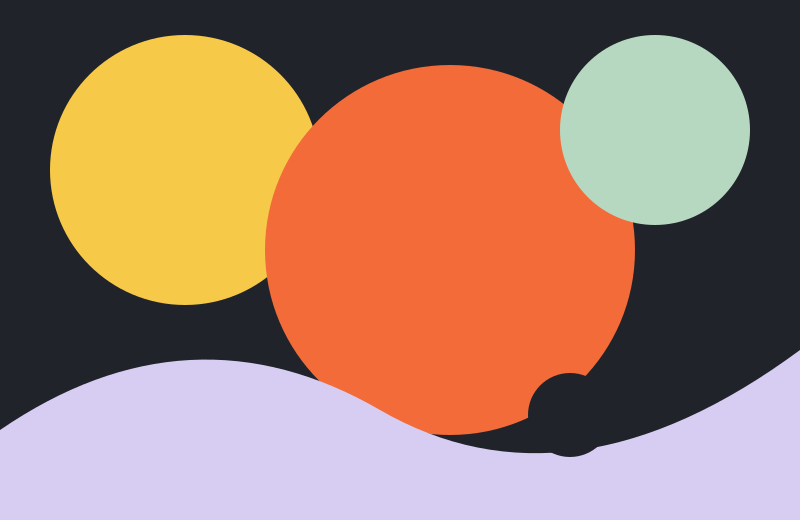

Clique
Pressiona este cartão para aumentar o contador.
faz clickLaboratório 04 · Interfaces Web
Explora esta pequena experiência interativa. Cada movimento deixa uma marca e cada clique conta uma história.
Começar a explorar ↓O teu percurso
Clica no botão para iniciares a tua contagem.
Cinco gestos, cinco respostas
Pressiona este cartão para aumentar o contador.
faz clickClica duas vezes e descobre uma mensagem escondida.
double tapPassa o rato por cima para iluminar este momento.
move overEntra e sai do cartão para alterar o seu estado.
leave meMove o rato e acompanha as coordenadas.
move freelyPausa visual
Uma composição criada para este laboratório: cor, ritmo e espaço num instante parado.
